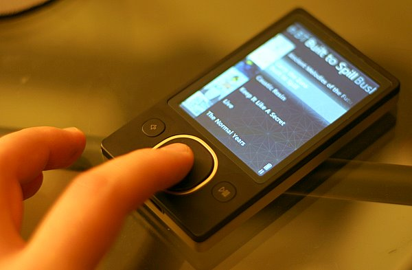
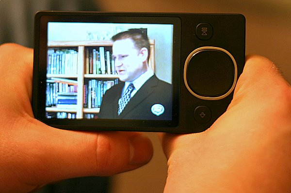
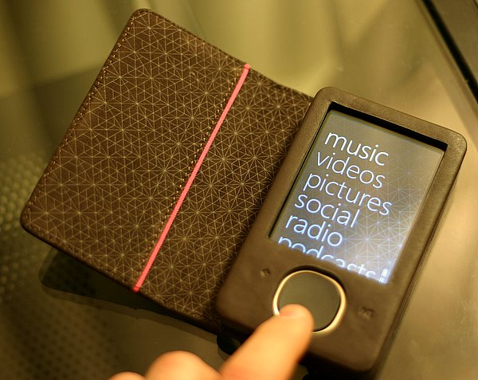

Microsoft’s Zune 80 Is A Joy
Around the end of October my Creative Zen Vision:M suddenly died on me during my morning commute. It’s no surprise that the player finally pooped out after being with me every workday for 2+ hours a day since I got it on Christmas, 2006. It was a fine media player and I would have gotten another one except Creative wasn’t making them anymore. Besides, the new Zunes were out with better features at a much cheaper price. So naturally I decided to “join the social.”
One of my favorite features of the Zune is how it keeps your place in the song or video after powering down. This makes it a breeze to pick up where you left off without fuddling around with bookmarks and now I don’t even hesitate listening to a podcast for a short drive. With my Creative Zen Vision:M I would spend more time loading and saving my place than driving on short trips. This feature is not important if you listen to music most of the time, but a podcast junkie like myself is always starting and stopping episodes and it is a relief to have a player take care of marking the place in my audio and video files for me.

The physical design of the Zune 80 is compact and simple. The player consists of two buttons, a large 3.5″ screen and a squircle for navigating. The squircle is a combination of a touch surface and button interface. Using your thumb you can flick up or down to move through list items just like an iPhone or press up or down for more precise navigation. Holding one edge of the squircle down will gradually speed up the seeking of a list when you need to go through a lot of items. To help you stay oriented as songs scroll by, the player will show the first letter of the track in a big, easy to read font so you know when to slow down. Basic categorization like Artists and Genre is available along the top which is accessed by moving left to right. To the right of the squircle is a play/pause button which is also used as an on/off switch when held down. On the other side is a back button. Navigating around the Zune is a real pleasure and a big improvement over the Zen player I was previously using.
The dimensions are pretty much like any other hard-drive based media player on the market. The Zune 80 is thinner than my Zen Vision:M and is probably just as thin as an iPod but I don’t notice the difference during everyday use. The player fits in my backpack and in my jacket pocket and that is all I really need to carry it
A Zune 30 would have been sufficient for my needs at the discounted price and with the newer Zune 2.0 interface, but the newer Zune 80 packs better video hardware. Formerly left to transcode MP4 files for playback on my Zen, the Zune has no problem playing these processor intensive video formats natively. Lots of podcasters offer their video up in the iPod-friendly MP4 files and since I have a device that supports the codec, a bigger selection of content is available to me. With the latest firmware update, I can now unsubscribe from a podcast feed right inside the player on the go making it easy to sample new podcasts without the extra hassle of managing feeds. When I dock the Zune with my host computer, the Zune software automatically adds the new content and removes the media I watched or listened to as well as updates any podcast feeds I have marked ‘unsubscribe’.

Speaking of the software, the Zune 2.0 software is good enough for syncing media to your device but falls short in a lot of areas. For one, it is resource intensive causing my machine to slow down considerably when using it. To be fair, my 4 year old computer doesn’t meet the recommended requirements but I still didn’t think the software would be a big resource hog. If you don’t use the official Zune 2.0 syncing software then you are out of luck as any third party software is locked out from managing the Zune hardware. I would prefer to use the excellent Media Monkey software for organizing and syncing my media but since the Zune uses proprietary drivers, there looks to be little anyone can do to break the tie with Microsoft.
Once you have your media set-up, the software isn’t that difficult. At first there were issues with duplicate podcast episodes showing up but as I made my way through the unplayed media, the issue sorted itself out. The Zune does a great job at staying synced with my computer. I just have to plug the Zune to the USB connector and off it goes with little intervention for me. I haven’t tried using the wireless syncing yet. In face I have turned the wireless capabilities off for the time being because I have never found another Zune device nearby and I would rather save the battery power than send out messages to my non-existent Zune neighbors. But one powerful feature about the wireless capabilities in the Zune has gone unnoticed. Wireless sync only works when the player is charging. Since I only have the included USB cable which connects to my computer, it doesn’t make sense for me to use wireless sync. But if I had a the Zune dock that connects to your TV than what I basically have is an Apple TV that I can carry in my pocket. Think about it. The Zune 80 will sync wirelessly with your computer and can output video to a standard definition TV at full resolution. Anything you can watch in your pocket, you can easily enjoy on a larger TV parked in front of a comfy couch. What’s not to love about that?
My biggest complaint about the Zune is there is no obvious comfortable way to hold it, especially when watching videos. The rectangular design is simple and makes great use of the space, but there is no place to put your hands. The best way I found to handle the Zune 80 is to rest the bottom corners in the web between your thumb and the index finger of both hands. Similar to holding a book.

A must have accessory for the Zune is the leather case. Not only does it protect the player from outside abuse, but it gives you something to hold on to while watching videos. The squircle pokes through but the buttons are covered but usable through the brown leather case. A large flap goes over the device to protect the screen when not in use and is secured by a magnet. It’s easy to open and stays out of your way while using the Zune.

If Microsoft is listening, they really need an accessory that lets you control the device while it is tucked away in a backpack. Creative had a wired remote control that allowed you to play/pause, change tracks, and adjust the volume all by a little dongle that goes between your headphones and the player. This was a dream to have on morning commutes with my Zen in my backpack and the remote clipped to my shirt. A wireless version would be cool but dealing with a battery to keep it charged sounds like a big hassle.
After a month of using the Zune 80 and putting it through it’s paces, I am really happy with my purchase. Every morning I wake up with glee knowing that my commute will not be a dull, monotonous one-hour train ride thanks to my slick media player to keep me informed and entertained. If a digital media player is part of your daily life then you will know how important it is to compare what is on the market and find the best player for your needs. Apple vs. Microsoft politics aside, the Zune is a fantastic device that I could enthusiastically recommend to any media junkie I meet. Don’t let the trash talking sway you, as I truly believe the Zune 80 is the best portable media player out on the market right now.
Update: On January 8th, after writing the bulk of this review, my Zune suffered a software crash as I was walking home from work. The podcast that I was listening to suddenly stopped and the screen read “Could not play track”. Thinking it was a problem with just the MP3 file itself, I tried to play a song from my music library. When I selected play from an album view my player froze and became unresponsive to any button mashing I attempted. When I got in front of my computer I looked up the hard reset button combo which requires holding the back button and the top of the squircle. This Microsoft knowledge base article details everything you need to know. Upon reboot I was greeted with this lovely message, “To recover from an error, Zune must erase all content.” The only option was to hit “OK” by pressing the middle of the squircle. The media player would then reboot and this process continued forever in an endless loop.
After digging around on the net for a better solution, I decided my only course of action was to replace the firmware and completely wipe out my nearly 40GB collection. Following these arcane directions, I managed to get my Zune back to its factory default. It then took me all night to reload all of the songs from my library back onto my fresh Zune.
I suspect this crash was due to a hard drive glitch and I can’t really blame Microsoft for the fragile nature of hard drive based portable media players. Problems like this will eventually be a thing of the past once solid state flash memory, which has no moving parts, comes down in price. For now I thought it was important to add this addendum to the review of what problems can happen after normal use out in the wild.

[…] right, I use a Zune with my MacBook Pro and it works just […]
[…] I’m a Zune fan. Gizmodo has a video of the buttery-smooth animation used in the Zune HD […]
[…] a twisty tie to take up some of the slack. The coiled cord can be gathered up in my pocket with my Zune without a […]
[…] Image credit: RussellHeimlich.com […]
I am just writing to let you know what a excellent encounter my wife’s child undergone reading through your web page. She noticed a good number of issues, which include what it is like to possess an excellent giving style to have many more completely learn chosen very confusing topics. You really surpassed her expected results. I appreciate you for showing the necessary, safe, edifying as well as unique thoughts on that topic to Janet.
Reply